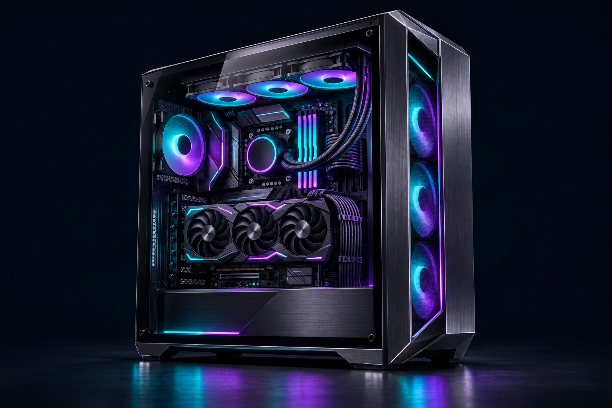
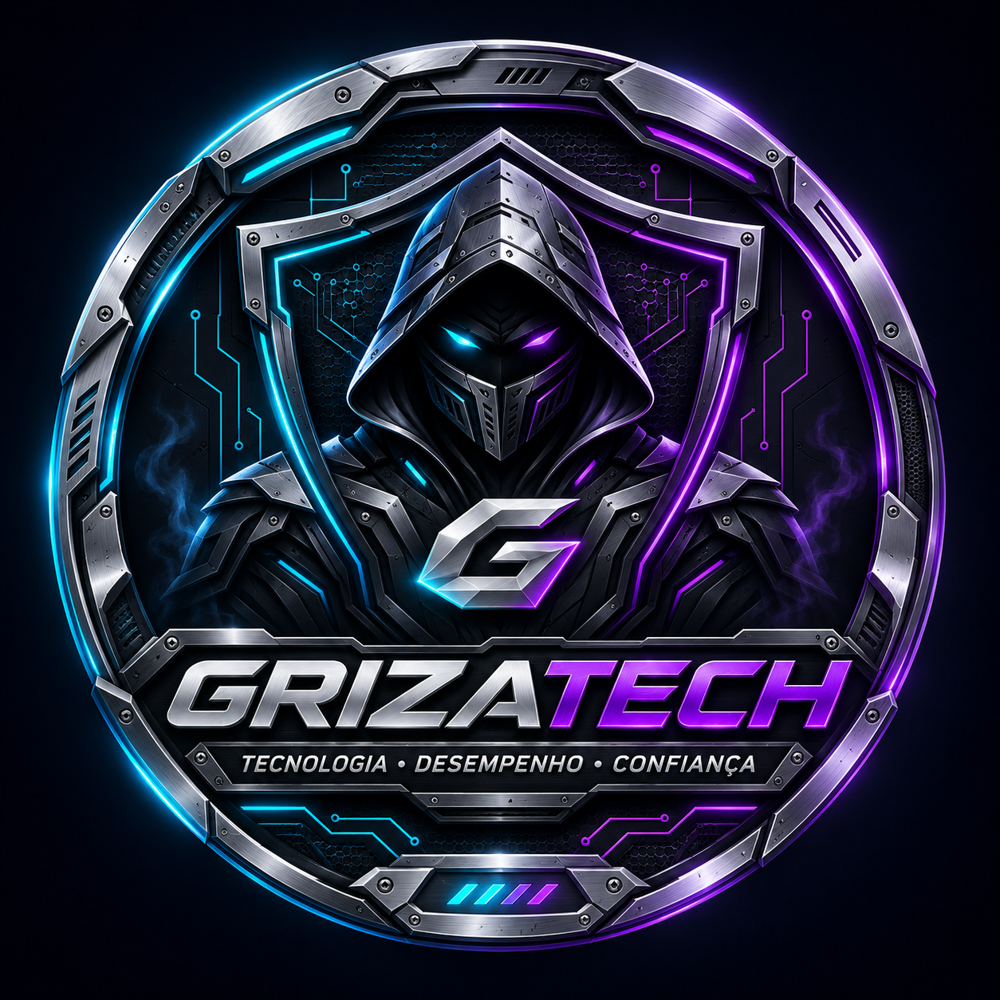
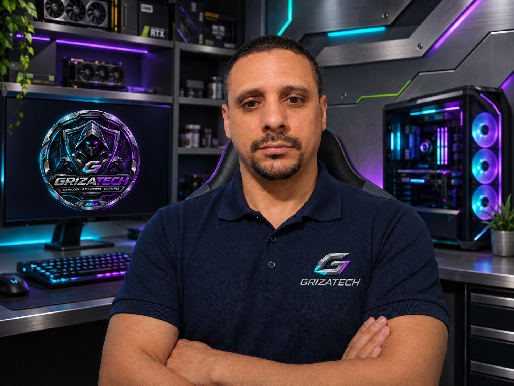
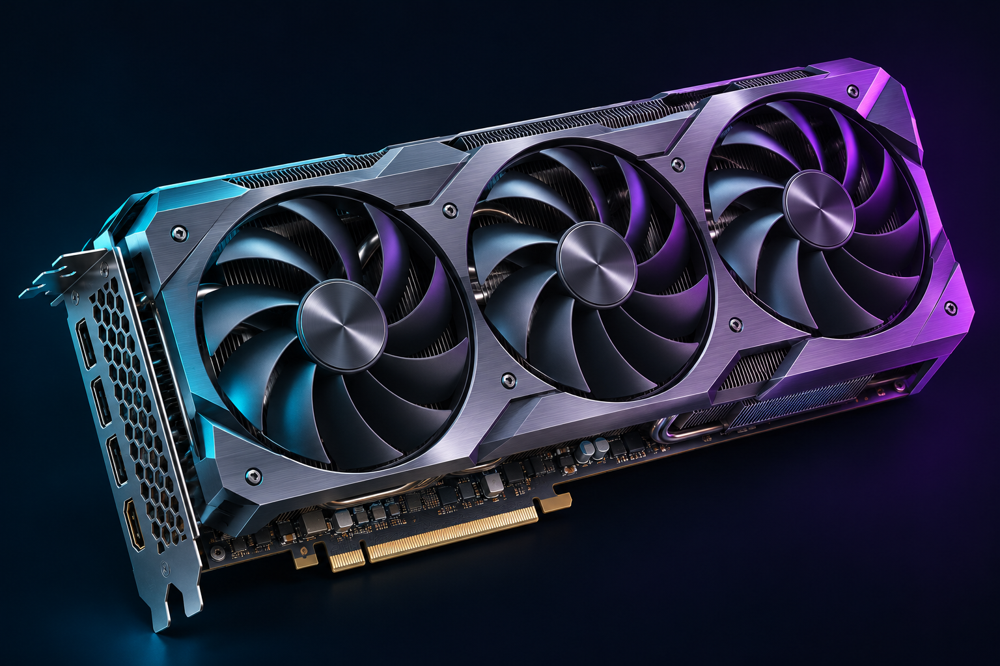
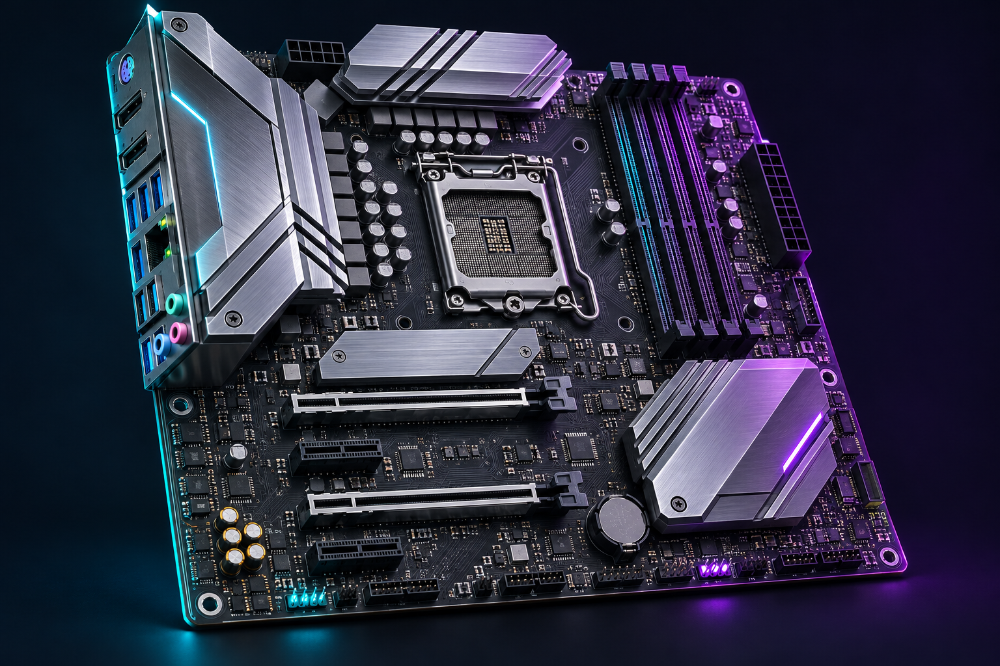

01 / BUILDMONTAGEM & ORGANIZAÇÃOCada detalhe.
Cada detalhe.
Uma máquina única.
Planejamento, montagem e acabamento para o seu próximo setup.
PLANEJAR MEU PC ↗ESPECIALISTA EM INFORMÁTICA E PCS GAMER
Soluções completas em informática com foco em performance, estabilidade e confiança. Do planejamento ao pós-venda, cuidando do seu PC como se fosse nosso.


FERNANDO | GRIZALLES
Atuo há mais de 20 anos na área de informática e, nos últimos anos, concentrei boa parte do meu trabalho em PCs Gamer, desempenho, otimização e experiência do usuário.
A GrizaTech nasceu para entregar soluções completas: diagnóstico, montagem, manutenção, BIOS, otimização, upgrades, software e suporte, sempre com foco em estabilidade e custo-benefício.
SERVIÇOS PRINCIPAIS
Diagnóstico, configuração e manutenção com uma abordagem técnica pensada para cada máquina — sem pacote genérico.

01 / BUILDPlanejamento, montagem e acabamento para o seu próximo setup.
PLANEJAR MEU PC ↗
02 / PERFORMANCEConfiguração pensada para o conjunto, os jogos e a sua forma de usar.
OTIMIZAR MEU SETUP ↗
03 / HARDWAREMemória, BIOS e upgrades analisados para cada configuração.
ANALISAR MINHA MÁQUINA ↗Arte ilustrativa de hardware. Veja as montagens reais na galeria de clientes ↗.
Acompanhamento desde o planejamento até a montagem. À distância, oriento você passo a passo na instalação das peças e nas configurações, enquanto você ou uma pessoa no local realiza o manuseio. Para clientes da região, a montagem também pode ser presencial, mediante combinação.
Analiso como seu computador está configurado e ajusto o sistema para o seu uso, buscando mais fluidez e estabilidade conforme os limites da máquina. O atendimento acontece principalmente por acesso remoto, via N10, com explicação dos ajustes realizados.
Verifico as configurações da placa-mãe e da memória e explico quais ajustes fazem sentido para sua máquina. O acompanhamento pode ser remoto, orientando você nas etapas locais e reinicializações, ou presencial, conforme a necessidade e a disponibilidade.
Conversamos sobre seus arquivos e programas antes de preparar uma instalação limpa do sistema. O serviço pode ser acompanhado à distância, com sua participação nas etapas necessárias, ou realizado presencialmente, conforme avaliação prévia.
Ajudo a identificar os cuidados necessários com o computador. Remotamente, posso orientar a limpeza e as verificações passo a passo, acompanhando quem executa as etapas físicas no local. Presencialmente, posso realizar o trabalho, conforme localização e disponibilidade.
Antes de comprar peças, analisamos seu computador, seu objetivo e quanto você pretende investir. A orientação pode ser feita totalmente à distância, com acompanhamento para escolher componentes compatíveis e planejar a melhoria. A instalação física é combinada separadamente.
ATENDIMENTO TRANSPARENTE
Um processo claro do primeiro contato até o pós-venda.
Você explica sua necessidade via WhatsApp ou Discord.
ENTRADAEu analiso o caso e envio a solução mais adequada.
PLANOServiço realizado com testes de estabilidade e validação.
TESTEVocê recebe tudo pronto e mantém canal direto de suporte.
PÓS-VENDAPORTFÓLIO E PROVA SOCIAL
Conheça algumas montagens realizadas e as experiências de quem confiou na GrizaTech. Cada máquina recebe atenção aos detalhes, do planejamento aos testes.
AVALIAÇÕES DOS CLIENTES
O cliente envia a avaliação diretamente pelo site. Ela fica em análise e só aparece publicamente depois da aprovação da GrizaTech.
Assim que uma avaliação real for aprovada pela GrizaTech, ela aparecerá automaticamente aqui.
GRIZATECH // PROVA SOCIALATENDIMENTO DO SEU JEITO
Atendimento principalmente remoto, via N10, com acompanhamento direto.
Serviços físicos também estão disponíveis, conforme a necessidade.
Todos os serviços podem ser avaliados para atendimento presencial ou remoto. Quando houver manuseio físico, o remoto envolve orientação a quem executa as etapas no local. Modalidade e viabilidade confirmadas antes do serviço. O acesso via N10 depende de conexão disponível.
Valores de referência. O orçamento pode variar conforme atendimento remoto ou presencial, complexidade e necessidade do equipamento. Confirme as condições antes da execução.
Abra o nome para ler os detalhes. Marque a caixa para adicionar ao seu orçamento.
Uma instalação limpa, com o computador preparado para o seu uso.
Reinstalação do Windows, drivers e configuração inicial. O atendimento remoto é avaliado antes do serviço, pois algumas etapas podem exigir sua participação no computador ou atendimento presencial. Combinamos previamente a preservação dos arquivos e os programas necessários.
Valores de referência. O orçamento pode variar conforme atendimento remoto ou presencial, complexidade e necessidade do equipamento. Confirme as condições antes da execução.
Ajustes para aproveitar melhor o computador que você já tem.
Atendimento principalmente remoto, via N10, para revisar Windows, drivers, programas de inicialização e configurações de uso. Os ajustes são definidos para a sua máquina e para o que você precisa fazer, respeitando os limites do equipamento.
Valores de referência. O orçamento pode variar conforme atendimento remoto ou presencial, complexidade e necessidade do equipamento. Confirme as condições antes da execução.
Placa-mãe e memória configuradas de acordo com o equipamento.
Análise da compatibilidade e das configurações de BIOS. A orientação e parte dos ajustes podem ser acompanhadas remotamente; a atualização depende do modelo, das condições do equipamento e de etapas locais. Se houver necessidade de intervenção física, o atendimento presencial será combinado.
Valores de referência. O orçamento pode variar conforme atendimento remoto ou presencial, complexidade e necessidade do equipamento. Confirme as condições antes da execução.
Cuidado físico para manter seu computador em boas condições.
Limpeza interna e revisão preventiva do computador, com atenção à poeira e à ventilação. Presencialmente, a execução é feita na máquina; remotamente, o atendimento é de orientação, acompanhando quem realiza a limpeza e as etapas físicas no local. A viabilidade é avaliada antes. Para limpar arquivos e liberar espaço, selecione Limpeza de Armazenamentos.
Valores de referência. O orçamento pode variar conforme atendimento remoto ou presencial, complexidade e necessidade do equipamento. Confirme as condições antes da execução.
Entenda a causa do problema antes de decidir o que fazer.
A investigação começa preferencialmente por atendimento remoto, via N10, quando o computador permite conexão. Analisamos falhas do sistema e os sintomas relatados. Problemas ao ligar ou suspeitas de defeito físico podem exigir avaliação presencial.
Valores de referência. O orçamento pode variar conforme atendimento remoto ou presencial, complexidade e necessidade do equipamento. Confirme as condições antes da execução.
Planeje a melhoria do seu computador antes de comprar peças.
Consultoria principalmente remota, via N10 e canais de atendimento, para analisar a configuração, o uso e o orçamento disponível. Você recebe orientação sobre compatibilidade e prioridades de upgrade. A compra e a instalação das peças não fazem parte desta consultoria.
Valores de referência. O orçamento pode variar conforme atendimento remoto ou presencial, complexidade e necessidade do equipamento. Confirme as condições antes da execução.
Montagem das peças, organização dos cabos e testes de funcionamento. Pode ser presencial ou com orientação remota, via N10, acompanhando quem realiza as etapas físicas no local. A modalidade, as condições e a viabilidade são combinadas antes do serviço.
Valores de referência. O orçamento pode variar conforme atendimento remoto ou presencial, complexidade e necessidade do equipamento. Confirme as condições antes da execução.
Verificação de compatibilidade, instalação de SSD ou memória e conferência do funcionamento. Atendimento presencial ou remoto, via N10, com orientação para que você ou uma pessoa no local faça o manuseio das peças. Peças e migração de dados são combinadas à parte.
Valores de referência. O orçamento pode variar conforme atendimento remoto ou presencial, complexidade e necessidade do equipamento. Confirme as condições antes da execução.
Atendimento remoto, via N10, para analisar o espaço ocupado e remover arquivos temporários e itens dispensáveis com sua autorização. Seus arquivos pessoais são avaliados com você antes de qualquer exclusão. Este serviço não é limpeza física do computador.
Valores de referência. O orçamento pode variar conforme atendimento remoto ou presencial, complexidade e necessidade do equipamento. Confirme as condições antes da execução.
Cópia e transferência dos arquivos combinados. Pode ser acompanhada remotamente, via N10, quando as unidades estão conectadas e acessíveis. O volume de dados, a conexão e a necessidade de manusear unidades podem alterar prazo, modalidade e valor.
Valores de referência. O orçamento pode variar conforme atendimento remoto ou presencial, complexidade e necessidade do equipamento. Confirme as condições antes da execução.
Configuração de impressora, headset, microfone, webcam e outros acessórios, preferencialmente por acesso remoto via N10. O cliente conecta os dispositivos. Problemas físicos ou instalações que exigem intervenção local são avaliados separadamente.
Valores de referência. O orçamento pode variar conforme atendimento remoto ou presencial, complexidade e necessidade do equipamento. Confirme as condições antes da execução.
Atendimento pela internet, via N10, para analisar e resolver dificuldades de programas e configurações. É necessário que o computador ligue e tenha conexão. O valor depende da demanda; serviços específicos e peças são orçados conforme a necessidade.
Valores de referência. O orçamento pode variar conforme atendimento remoto ou presencial, complexidade e necessidade do equipamento. Confirme as condições antes da execução.
Instalação e configuração de programas por atendimento remoto, via N10, conforme a compatibilidade do computador. Os programas e o escopo são combinados antes do serviço. Licenças, assinaturas e compras de software não estão incluídas no valor.
Valores de referência. O orçamento pode variar conforme atendimento remoto ou presencial, complexidade e necessidade do equipamento. Confirme as condições antes da execução.
Verificação de compatibilidade e acompanhamento da configuração de Secure Boot e TPM. O processo pode exigir reinicialização e sua participação local na BIOS. A viabilidade do atendimento remoto é confirmada antes; não inclui a compra de módulos ou peças.
Valores de referência. O orçamento pode variar conforme atendimento remoto ou presencial, complexidade e necessidade do equipamento. Confirme as condições antes da execução.
Atendimento remoto, via N10, para ajustar as configurações do jogo combinado e adequá-las à sua máquina e à sua preferência de qualidade e fluidez. A quantidade de jogos e a necessidade de outros ajustes podem alterar o orçamento.
Valores de referência. O orçamento pode variar conforme atendimento remoto ou presencial, complexidade e necessidade do equipamento. Confirme as condições antes da execução.
HUMOR DE BANCADA / SÁTIRA PROFISSIONAL
Respeito pelo trabalho
é coisa séria.
Uma dose de exagero para quem diminui o trabalho técnico. Para contratar, consulte os serviços e combine o orçamento antes do atendimento.
O atendimento pode ser rápido. O conhecimento levou anos.
A distância muda. O trabalho e a responsabilidade continuam.
O vídeo mostra um exemplo. O diagnóstico considera a sua máquina.
Cada profissional estabelece as condições do próprio trabalho.
Instalar é uma etapa. Preparar, configurar e validar também fazem parte.
Palpite não substitui teste. Confirmar a causa evita gastar duas vezes.
Um clique muda a configuração. Saber qual mudar exige critério.
Analisar, identificar e orientar já é trabalho técnico.
Urgência precisa ser combinada. A agenda dos outros clientes também merece respeito.
CONECTE-SE COM A GRIZATECH
Escolha o canal que faz mais sentido para você.